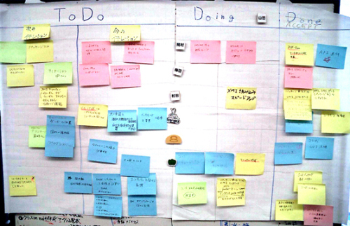
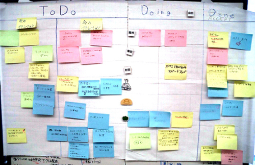
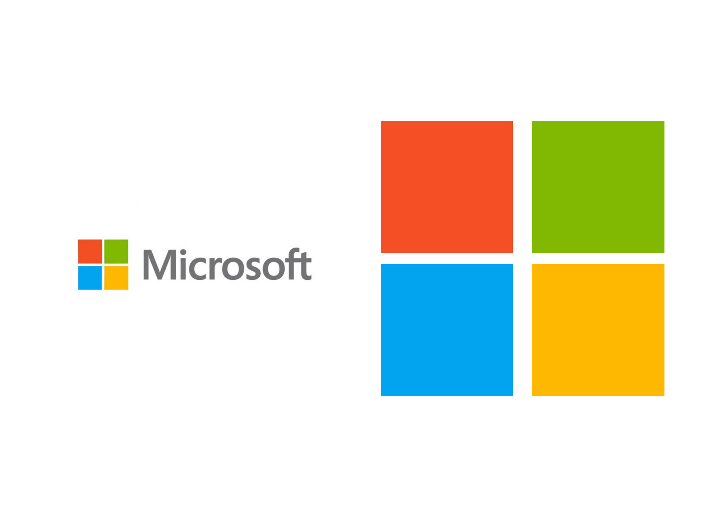

The introduce of
JIRA
By Tony Mao
Question 2
在项目 规划 阶段，你还在使用 黑板笔或便条贴 规划项目的各个阶段吗？

 

Do U Konw ?
Apple
Microsoft

Google

Audi
NASA
HubSpot
You should know  JIRA
JIRA
You should know
Atlassian是一家2002年在澳大利亚成立的软件公司，该公司始终围绕一个主题，如何更好的为企业管理issue和知识管理，提高软件企业开发和管理的能力，制定相应的标准，方便管理者清楚的了解整个项目的过程和进度。除了JIRA之外，还有Confluence,HipChat,Bitbucket,Stash,Fisheye等众多的软件开发管理的相关工具。
Answer 1
需求直接转变成Userstory
Answer 2
通过电子化公示板展示项目Task所处的阶段

Answer 3
通过不同的过滤器来筛选Task列表
Answer 4
通过图表和系统归纳为项目评审阶段提供可参考的依据
Pricing overview
10 users $10 | $10/mo
25 users $1200 | $100/mo
500 users $8000 | $500/mo
One more thing ...
相似的竞品有哪些呢？
redmine
TeamLab
禅道
...
etc. 多如牛毛
JIRA的优势
有专业的团队为其更新
拥有充足的插件来管理项目整个阶段
代码管理，Code Review等都不是问题，需要按照Fisheye插件
etc. 多如牛毛
所以，只要承担得起，那么最适合的就是JIRA
最佳实践
- 在开需求会议时，客户提到的需求尽可能开设多的Userstory
- 在项目规划阶段，为每个Userstory详细考虑，结合自身团队的实际情况，开设尽可能详细的Task
- 在项目Kickoff阶段，合理分配每个sprint该完成的Task数量，并设立相应的milestone
- 每天按照权重来排序下还没有完成的Task，并设立Due Date